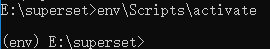

安装
本实验在win10环境下完成。
配置
请务必安装了VS（安装了C++依赖包），且使用x64 Native Tools Command Prompt for VS 2017运行以下命令：
安装虚拟环境virtualenv（需要安装Python，并配置环境变量）
pip install virtualenv
使用virtualenv。先在E盘建立e:\superset目录
md superset cd superset
激活
# 创建虚拟环境 virtualenv env # 激活，启用虚拟环境（必须要用反斜杆） env\Scripts\activate会发现前面有（env）字样：

安装之前，需要单独安装安装sasl。不装这个包，可能superset安装会不成功。下载地址
现在开始安装
supersetpip install superset
初始化与使用
# 创建管理员帐号
fabmanager create-admin --app superset
# 初始化数据库 (windows下，先进入到
Python安装目录（或者virtualEnv的虚拟目录）下，lib\site-packages\superset\bin下)
Python superset db upgrade
# 加载例子(后续操作都需要在lib\site-packages\superset\bin下)
Python superset load_examples
# 初始化角色和权限
Python superset init
# 启动服务，端口 8088, 使用 -p 更改端口号。
Python superset runserver -d
使用浏览器，打开localhost:8088即可看到登录页面。